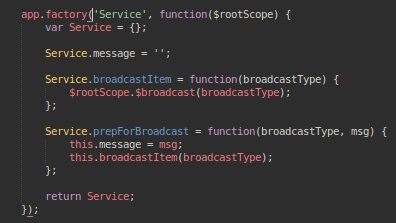

By Akhil Pandey, May 27, 2016
By Akhil Pandey, May 27, 2016
The first week of GSOC involved with dealing work with the workarea. So before
I start the blog post, it is better if you know more about what sTeam web interface
is and what are the capabilites of sTeam. Here is a previous blog post of mine explaining
about sTeam. Click Here
As mentioned in my previous article the sTeam web interface has two important controllers.
- workareaCtrl.js
- workspaceCtrl.js
If you want to see the code have a look at the repository all by yourself in order to better understand the concepts which are about to be detailed now. Link.
So what is a Controller ?
It is simply a a constructor function which is instantiated by AngularJS when it encounters
ng-controller directive in HTML.
So what is a Factory ?
In Angular Js a factory is an injectable type which helps us in encapsulating repetitive logic.
How are they helpful for sTeam web interface ?So as my first week of work started of for GSOC, the core concentration has been on primarily working with the controllers of the workarea and integrating them with the respective views. In an attempt i started of with adding a :
- commentsCtrl : Used for adding comments to the web interface
- workspaceeditorCtrl : Used for integrating textAngular to the web interface
Things apart, in a broader aspect here what should be understood is about how
things should be implemented using controllers, factories and services. Let me illustrate
how it should be properly done in angular js.
To start off
Generally we should understand that controllers responsible for augmenting the scope which is done by attaching models and functions to it that are subsequently accessed in the view. There are some things which are to be understood while writing controllers. Lets go one by one,
- A Straight "No" for all the DOM manipulation. This must be achieved only with directives
- If you are having a situation where you are about to write repeatable code, then don't do it with controllers, instead encapsulate them in services.
- If you are trying to expose the whole controller instance then it isn't a good idea. In fact the scope object exists in order to clear separation of concern between controller and view .
“Services, factories, and providers are all injectable types. We must understand that Factories in angular Js are just another example for an injectable type. It looks almost the same as Service but when it comes to implementation you can decide and determine what to instantiate and return from the factory”
Let me give you a small example before i wrap up, Have a look at the below image,

Observe broadcastItem, prepForBroadcast. If you look keenly essentially what
i am doing there is creating an injectable type which enables me to change the message that
which has to be printed depending on the broadcast item.
One more key thing about factories is that a factory can also depend on other services or factories. Also there is one more point to grab which is we are returning an object from the factory function, so we absolutely have the freedom to determine what should be the object which is to be returned, going further we can base it on certain parameters as well.
Thats it folks,
Happy Hacking !!